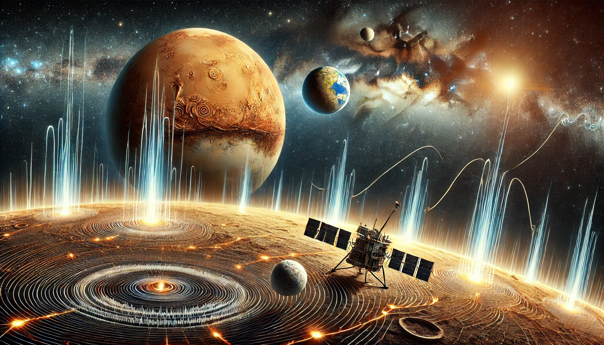

Além da Terra: como detectamos terremotos em Outros Mundos do Sistema Solar.
Primeiro Passos
A análise de ondas sísmicas é como escutar "músicas" que se formam quando há terremotos, mas em vez da Terra, estamos ouvindo planetas e luas. Essas ondas nos ajudam a entender como esses corpos celestes são por dentro e quais processos geológicos acontecem lá. Assim, conseguimos descobrir mais sobre a estrutura e a dinâmica deles, como se estivéssemos usando um "detector" para explorar o interior desses mundos distantes.
Por que Aprender Sobre Ondas Sísmicas em Outros Planetas?
Estudar ondas sísmicas em outros planetas é importante para entender do que eles são feitos e como se formaram ao longo do tempo.
1. Entendendo a Estrutura Interna
As ondas sísmicas nos ajudam a descobrir as camadas internas de um planeta, como o núcleo, manto e crosta. Isso é essencial para saber do que ele é feito e sua história.
2. Sinais de Atividade Geológica
A atividade sísmica indica que processos como terremotos e vulcões estão acontecendo. Entender isso é importante para saber como os planetas mudam e se podem ter condições para a vida.
3. Preparação para a Vida Humana no Espaço
Conhecer a atividade sísmica é fundamental para planejar locais seguros para futuras missões espaciais e construir bases onde humanos possam viver.
Desafios da Detecção Sísmica no Espaço
Detectar terremotos em outros planetas traz desafios únicos que precisam de soluções novas.
Transmissão de Dados
Enviar dados para a Terra requer muita energia e largura de banda, especialmente em planetas distantes como Marte ou nas luas de Júpiter e Saturno. Isso é difícil para as sondas espaciais.
Ruído nas Medições
Os dados sísmicos podem ser interferidos por várias coisas, como ventos solares, impactos de meteoritos e ruídos dos próprios instrumentos. Separar o sinal verdadeiro em ambientes difíceis é complicado.
Limitações de Equipamento
Os sismômetros precisam ser muito sensíveis e funcionar em condições extremas, como altas temperaturas e radiação. Criar esses equipamentos é um grande desafio tecnológico.
Missões Relevantes
Várias missões espaciais ajudaram a entender melhor a atividade sísmica em outros mundos.
Missões Apollo (Lua)
Descrição: Entre 1969 e 1972, astronautas da
missão Apollo instalaram sismômetros na Lua, criando uma rede
para monitorar terremotos lunares.
Descobertas: Eles descobriram "lunamotos",
impactos de meteoritos e outros movimentos, ajudando a mapear a
estrutura interna da Lua.
Mars InSight Lander
Descrição: Uma sonda da NASA que pousou em
Marte em 2018.
Objetivo: Estudar a estrutura interna de Marte
usando um sismômetro avançado.
Descobertas: A missão revelou detalhes sobre o
núcleo de Marte e a espessura de sua crosta.
Missões Futuras
Europa Clipper: Prevista para 2024, esta missão
da NASA irá investigar a lua Europa de Júpiter, que pode ter um
oceano subterrâneo. Os instrumentos poderão detectar atividade
sísmica.
Dragonfly: Uma missão da NASA para Titã, a lua
de Saturno, programada para 2027. Embora o foco seja a química
orgânica, também poderá fornecer informações sobre atividade
geológica.
Desafio: Análise de Dados Sísmicos
O desafio é criar um programa que analise os dados sísmicos das missões Apollo e Mars InSight, identificando terremotos e separando-os do ruído. Essa análise é importante para otimizar o que é enviado para a Terra.
Por que Isso é Relevante?
Melhorar a transmissão de dados é crucial para economizar energia, tornar as comunicações mais eficientes e acelerar descobertas científicas.